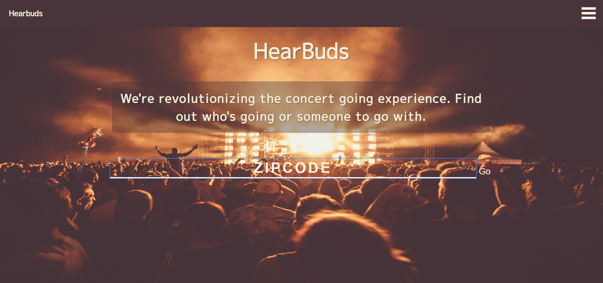
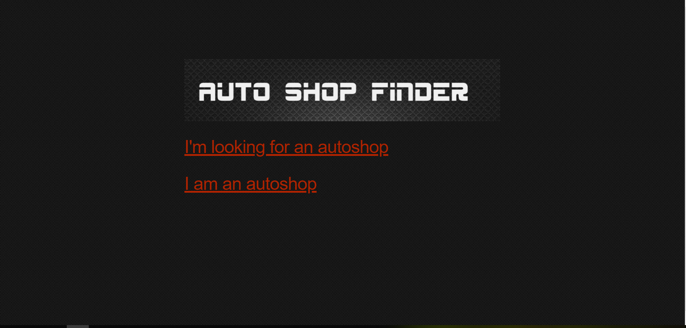
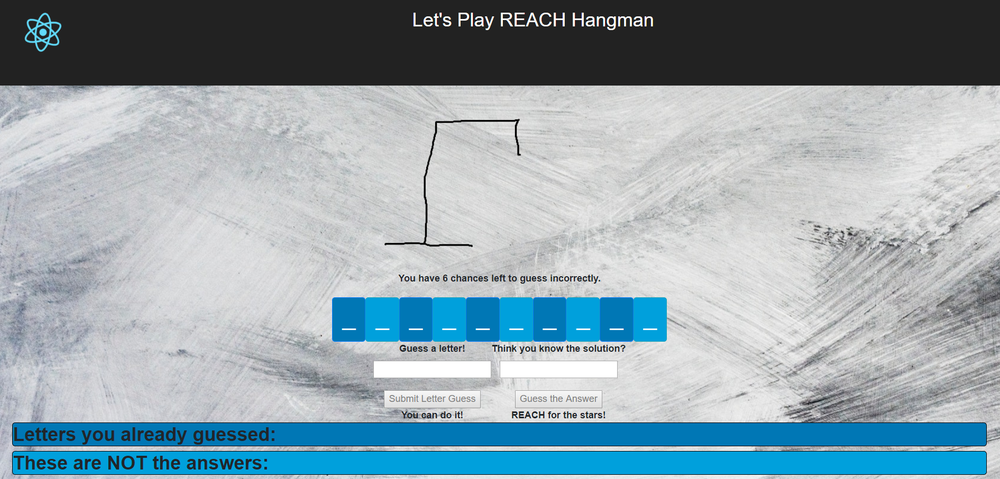
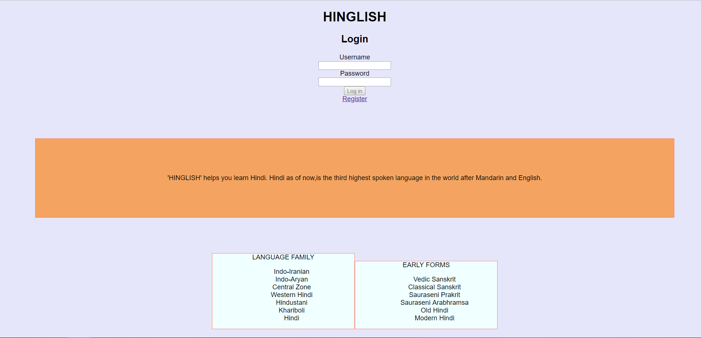

The future is the result of what we build now.
And I’m a Software Developer who leverages tech to build solutions.
Hire MeAbout Me
I'm a Full-Stack Developer and Machine Learning Engineer who wants to use cutting-edge AI algorithms, such as Deep Learning, to solve problems that face humans as we aspire toward spending more time doing creative, novel activities - like adding to the human body of knowledge or creating new experiences - as opposed to redundant, mundane activities that can be automated. In addition to possessing the skills to build practical full-stack web applications, I have the theoretical knowledge and real-world experience necessary to see the big picture and tackle new challenges. My dream is to become a Starfleet Officer in the United Federation of Planets. Seeing as we don’t yet have Starfleet or even the technology level needed to build it, I have a lot of work to do! A U.S. Citizen and Transhumanist - I am eager to work on audacious, outrageous, risky, and socially-disruptive projects and technologies, from sharing economy platforms and blockchain applications to MOOCs, space colonization, genetic therapies, and radical life extension. My experience includes applying statistical data analysis to problem domains in Epidemiology, Health Informatics, and Education Policy, and I'm an independent, adaptable self-starter with over 8 years of successful self-employment, to boot. Further, I have international start-up experience, including co-founding a small virtual education management firm and consulting 3 other startups formed by multinational members with global target markets.
HearBuds
HearBuds allows users to find concerts in their area and find people to attend with.

Auto Shop Finder
This app allows Auto Shops to list themselves in a database for car owners to find them. Auto Shops can create a user account by registering and submit their shop's contact information and services offered. Car owners can see a list of the shops available and click on the shop name to get more information about the shop.

REACH Hangman
This app implements the classic game "Hangman" using React.js. It fetches a collection of words, which can be optionally tailored by difficulty, minimum length of letters, and/or maximum length of letters. Then it randomly chooses one of the words for each round, giving the user 6 incorrect guesses before losing. The guesses can be letters or full words, and duplicates are not permitted within the same submission form (i.e., if the user guessed 'a' in the letter form, s/he could also submit 'a' in the word form. However, 'a' couldn't be resubmitted in the same form during the same round). The player can keep playing rounds with new words each time, and the app will track wins/losses until the player closes or refreshes the web browser.

Hinglish
Hinglish helps you learn Hindi. Hindi is, as of now, the third highest spoken language in the world after Mandarin and English. Some people want to learn Hindi, but they don’t have a friend to teach them, and they don’t know how to read written Hindi. Now they can use Hinglish, which leverages a spaced repetition algorithm to present questions based on whether they were correct or not.
